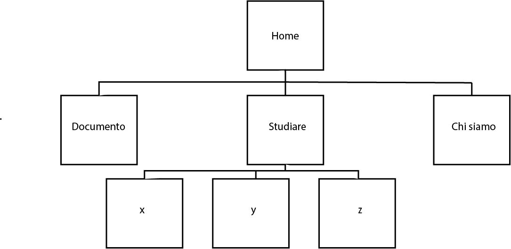
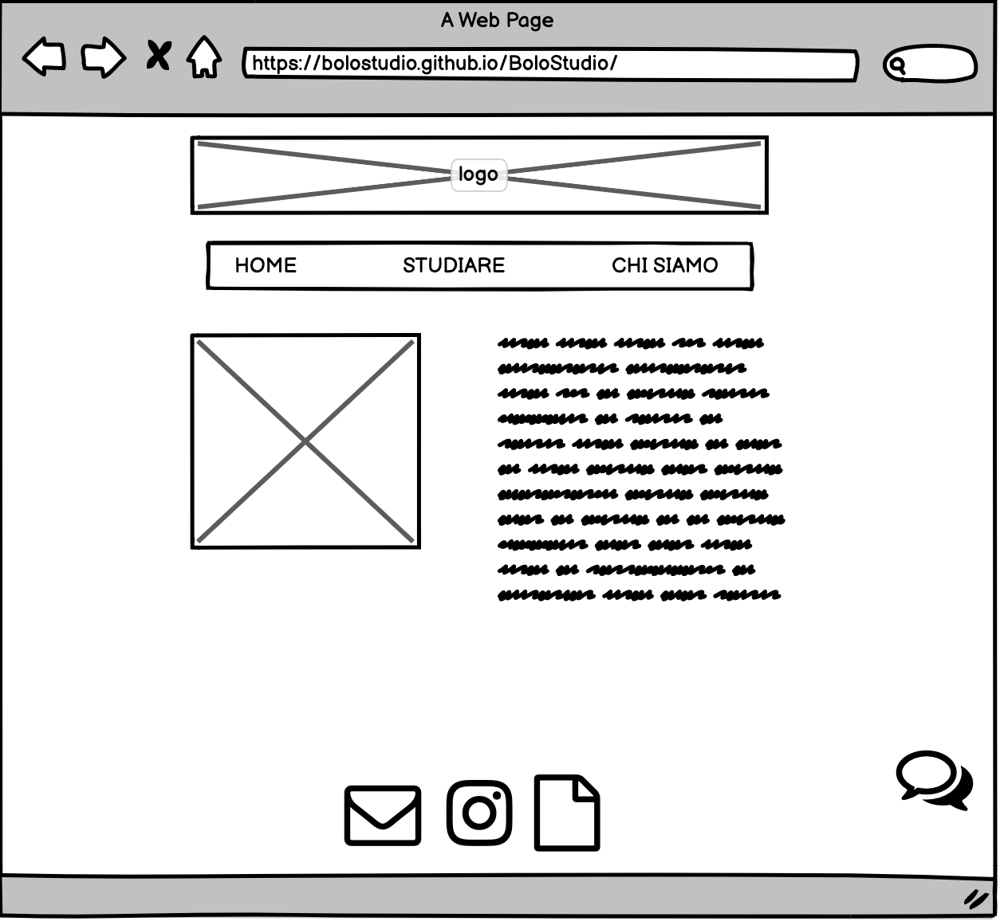
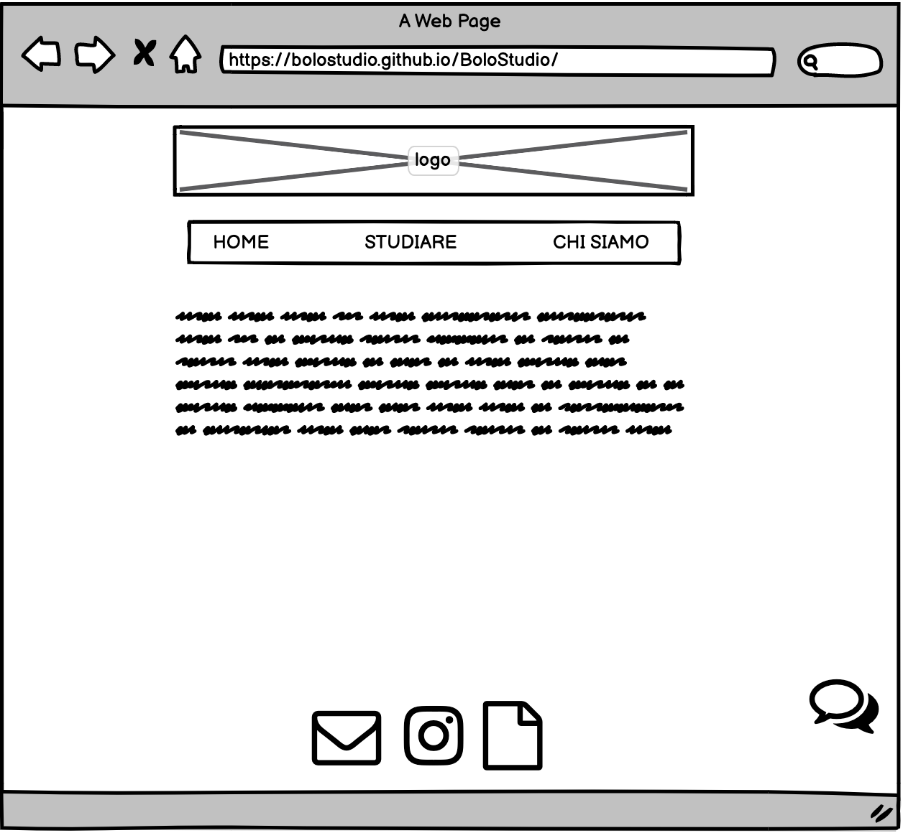
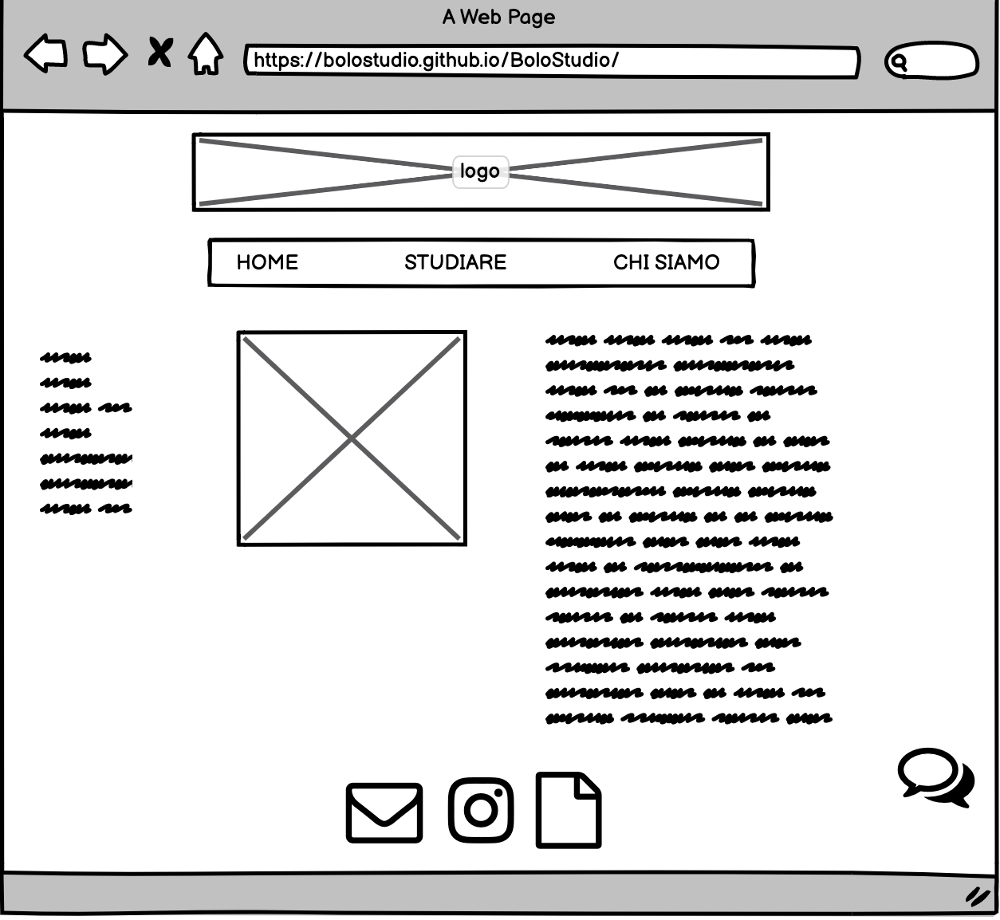
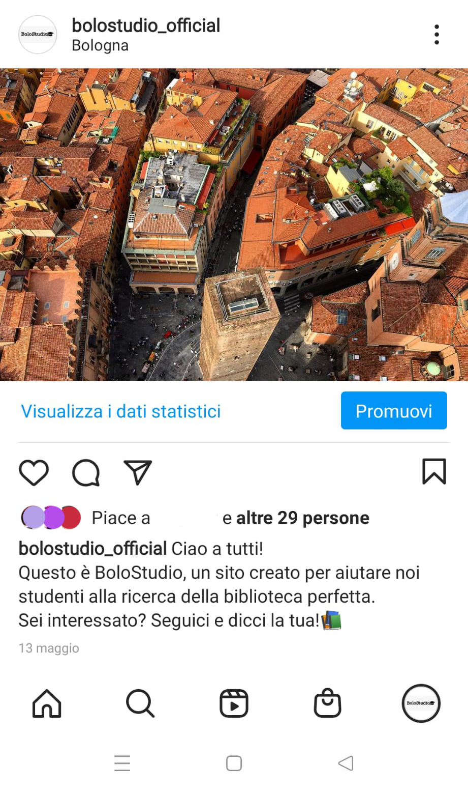
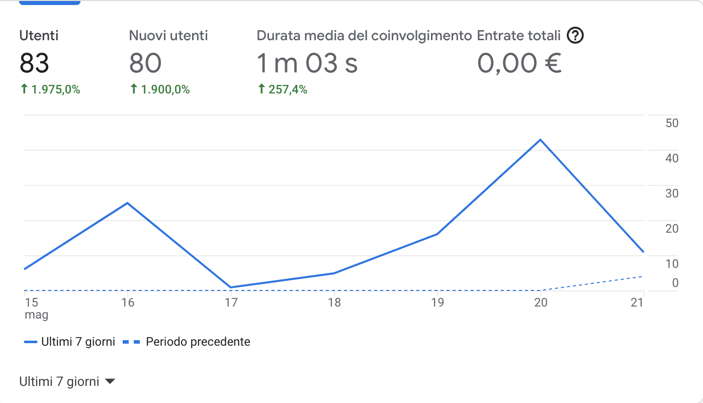
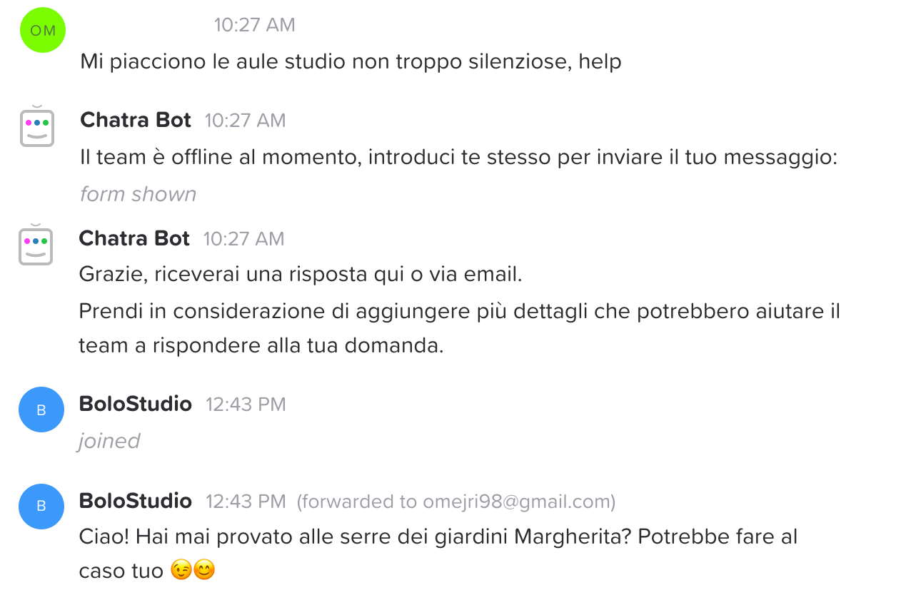
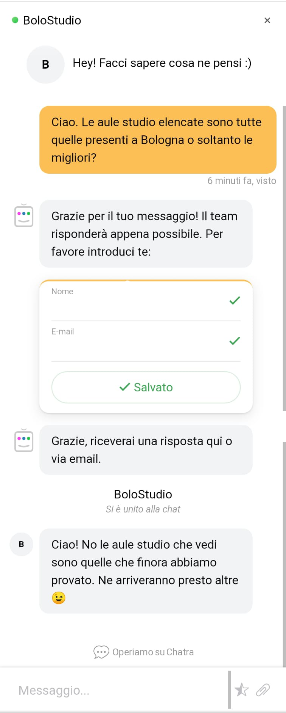

Abbiamo creato questo sito con l’obiettivo di far conoscere agli studenti di Bologna, provenienti da tutto il mondo, degli spazi adibiti al momento dello studio, che siano biblioteche, aule studio o dei semplici bar. Il sito non offre soltanto una lista di luoghi: per orientare al meglio lo studente nella sua scelta potrà far riferimento a parametri quali la capienza, i servizi disponibili, ma anche alla “quantità di silenzio” in tali luoghi, per offrire a tutti gli studenti un’esperienza su misura delle proprie esigenze. Inoltre gli studenti possono interagire tra loro recensendo questi ambienti.
L’obiettivo principale è quello di mettere gli studenti nelle condizioni di poter scegliere il luogo perfetto per il loro studio, esplicitando alcuni parametri per orientare al meglio la scelta e dando la possibilità ad altri studenti di dire la loro a riguardo.
Il sito è rivolto principalmente a studenti di ogni grado, con un focus sugli studenti universitari (18-29 anni), e più in generale a chiunque necessiti di un luogo per leggere e/o studiare.
I competitors presi in considerazione sono il sito delle biblioteche di Bologna e i siti delle singole biblioteche universitarie. Dopo una prima analisi è emerso come tutti questi siti web tendano in generale ad elencare semplicemente i luoghi di interesse con informazioni relative all’ubicazione e agli orari.


Chi siamo
Studiare

Abbiamo scelto "#DE6D26" come colore di backgroud in header e footer poiché richiama i colori caratteristici di Bologna. Il font (Verdana Sans-Serif) nero su body bianco per migliorare l'usabilità del nostro sito web e favorire una lettura più "comoda". Il logo è stato realizzato con Gimp. Per aiutare l'utente ad orientarsi abbiamo applicato un "padding-bottone" attorno al nome della pagina nella quale ci si trova. Per quanto riguarda l'hover, realizzato con una veloce transizione, abbiamo scelto il nero in header e il bianco nel footer.
I linguaggi web utilizzati sono HTML5, CSS e Javascript. Con i primi due abbiamo realizzato tramite un text editor (Sublime Text 2) l'intera architettura del sito web, mentre con Javascript abbiamo implementato una chat box (Chatra).
Gli strumenti tecnologici utilizzati sono:
-Sublime Text 2 come editor;
-FontAwesome per le icone nel footer;
-Bootstrap per il carosello;
-Unsplash per le immagini in home;
-Google (Creative Commons) per le immagini;
-Adobe Color per la palette colori;
-Chatra per la chat box;
-Illustrator per creare il layout;
-Gimp per la realizzazione del logo;
-Balsamiq per la creazione dei wireframe;
-EnvatoTuts+ per la griglia foto in "studiare";
-GitHub per la pubblicazione del sito;
-Google Analytics per monitorare il traffico web.
I competitors presi in considerazione offrono una lista completa e dettagliata di biblioteche e aule studio presenti sul territorio bolognese (e non solo). Questi indicano orari, ubicazione ed eventuali condizioni/regole di accesso e prestito libri. Tuttavia quello che manca è un rapporto diretto con gli studenti. Da qui nasce il nostro progetto: uno spazio in cui gli studenti possano dire la loro attivamente e trovare il posto perfetto dove studiare, da soli o in compagnia, in assoluto silenzio o in un bar.
L’obiettivo principale è quello di poter permettere agli studenti, target di riferimento, di dire la loro sui posti che frequentano, mettendo in risalto pro e contro, creando una comunità di riferimento per lo studio fuori casa.
Il sito si rivolge in primis agli studenti sul suolo bolognese e a chiunque necessiti di un luogo per lavorare o studiare.
Il target viene raggiunto per lo più tramite la pagina Instagram @bolostudio_official o tramite il passaparola (WhatsApp).
La promozione avviene dunque principalmente online, grazie alla produzione di contenuti sulla pagina Instagram: tramite post che riprendono i contenuti web, Instagram Stories con sondaggi e question box, gli utenti possono prendere visione degli ultimi aggiornamenti e possono interagire attivamente con la pagina.
Il messaggio che il sito si prefissa di trasmettere è quello di far scoprire agli utenti delle realtà a loro sconosciute, o se conosciute di poter esprimere il loro pensiero sotto forma di recensione, dando vita a una vera e propria comunità studentesca in cui ognuno è libero di dire la sua.Per comunicare al meglio questo messaggio ci siamo servite di una grafica molto minimale e di un Tone of Voice molto colloquiale e a tratti ironico, per migliorare l’esperienza dell’utente finale.
Abbiamo promosso il nostro sito web tramite una pagina Instragram, creando post e interagendo con gli utenti tramite delle storie. Inoltre il sito verrà promosso tramite il passaparola.
Il progetto è riuscito a raggiungere gli obiettivi che erano stati prefissati:
-Dal giorno della creazione del profilo Instagram, l'account ha raggiunto 114 utenti (al 22 maggio 2021), totalizzando 96 interazioni con il profilo, tra commenti, likes e risposte alle stories.
Il target raggiunto è in linea con quello prefissato: giovani studenti (anni 20-27) domiciliati a Bologna (ma non solo).

-Il sito web ha raggiunto 83 utenti unici, con 152 sessioni:

L'interattività con il pubblico di riferimento è stata raggiunta inoltre con l'ausilio della chat box presente sul sito:

